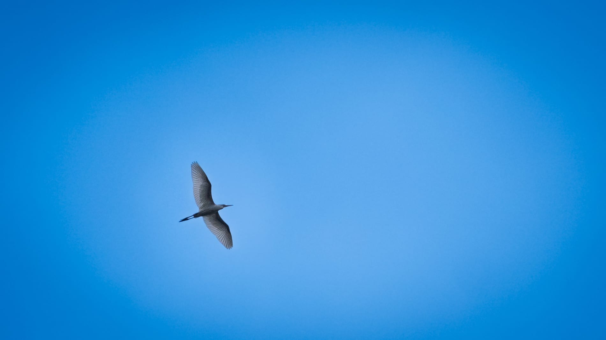
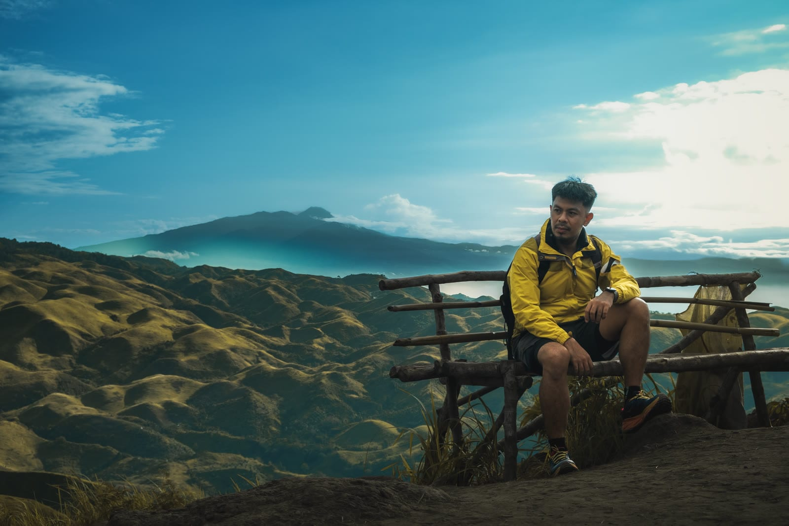

Photography
Field Work
Wildlife, macro, the night sky and candid frames — available light, around Davao del Sur.
Year
2025
Details
Ongoing — Davao del Sur

Overview
My own photography, mostly around Davao del Sur: insects and birds at close range, landscapes, the night sky and people met along the way, in the light that was already there.
It is where I practise what editing needs every day — framing, waiting for the moment, and colour that stays true to what the scene looked like.
Gallery
More examples

Next project
Photo Manipulation
Photo Editing